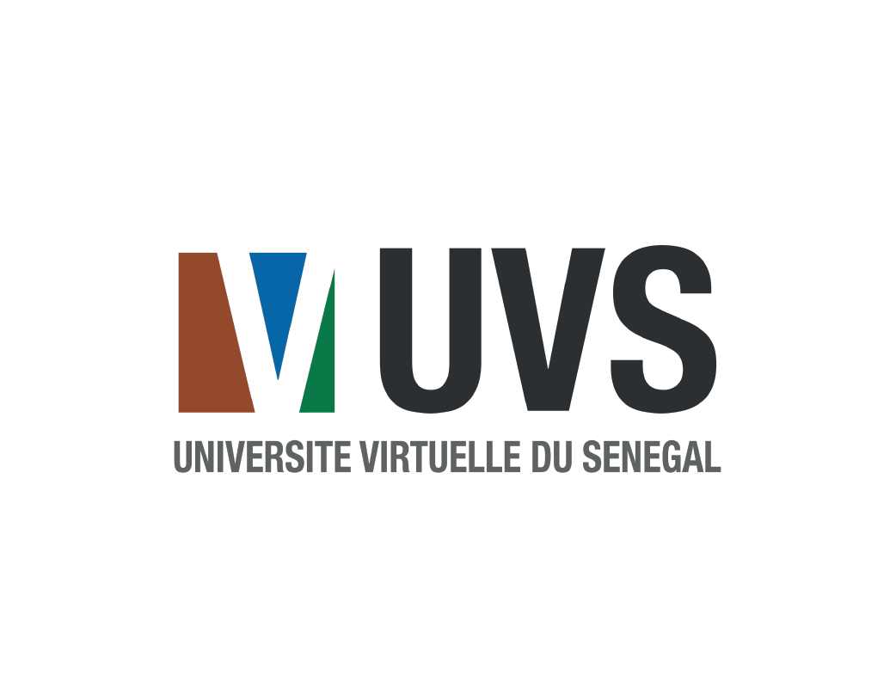

<ion-content>
        <ion-card>
          <ion-card-header>
            <ion-toolbar>
              <ion-card-title class="text-center">Bienvenue</ion-card-title>
            </ion-toolbar>
          </ion-card-header>
          <hr/>
          <ion-card-content>
            <div class="mb-0 mt-0">
              
            </div>
            <div class="content">
              <p>
                L’Université virtuelle du Sénégal est une université
               publique à caractère numérique qui repose sur un
                modèle pédagogique innovant basé sur les Technologies
                 de l’Information et de la Communication (TIC).
                 <br/>
                 Tapez sur continuer pour vous connectez!
              </p>    
            </div>         
           </ion-card-content>
          <div class="form-group text-center">
            <button class="btn btn-success" routerLink='/login'>Continuer</button>
          </div>  
        </ion-card>
  </ion-content>
